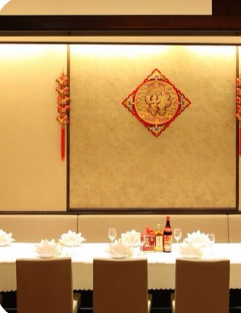

Hello!
このページについて挙式・披露宴、おつかれさまでした！
おふたり、本当におめでとう🎉
このページは、ふたりの友人が勝手に作った二次会の案内です。会場と時間をまとめたので、迷ったときに開いてください。
ここからは少しくだけた雰囲気で、みんなでおふたりをもう一度お祝いしましょう🥂
新郎新婦の友人有志より
Information
二次会
Date
10.24
2026年10月24日(土)
Open
15:00
開始
Countdown — 二次会まで
Venue — 二次会会場
神奈川県横浜市中区山下町152-2
小籠包専門店王府井酒家
〒231-0023神奈川県横浜市中区山下町152-2
Googleマップで会場を開く
Restaurant
お店のご紹介
小籠包専門店王府井酒家
- ADDRESS
- 〒231-0023
神奈川県横浜市中区山下町152-2 - MAP
- Googleマップで開く ↗
Toast
乾杯のご挨拶
Kanpai Speech
尾川 拓也Ogawa Takuya
新郎 友人Schedule
当日の流れ-
挙式スカイチャペル（タワー館18階）
-
披露宴ホテルニューグランド
-
二次会小籠包専門店 王府井酒家（横浜中華街・山下町）
Wedding
挙式・披露宴のおさらい
ホテルニューグランド
挙式 10:30〜 ／ 披露宴 11:30〜
ホテルニューグランド
挙式 10:30〜 ／ 披露宴 11:30〜
- CHAPEL
- スカイチャペル（タワー館18階）
10:25までに直接お越しください - ACCESS
- みなとみらい線「元町・中華街駅」1番出口より徒歩約1分
- LINKS
- Googleマップ ↗ 公式HP ↗